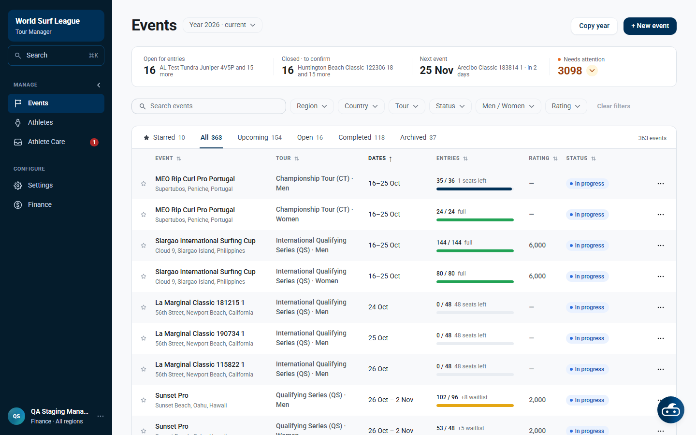
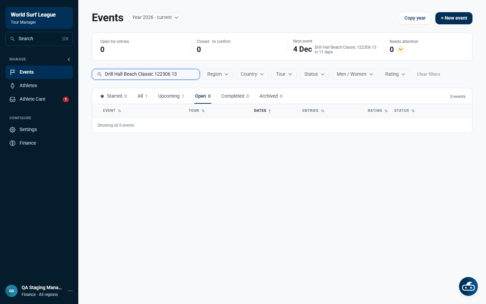
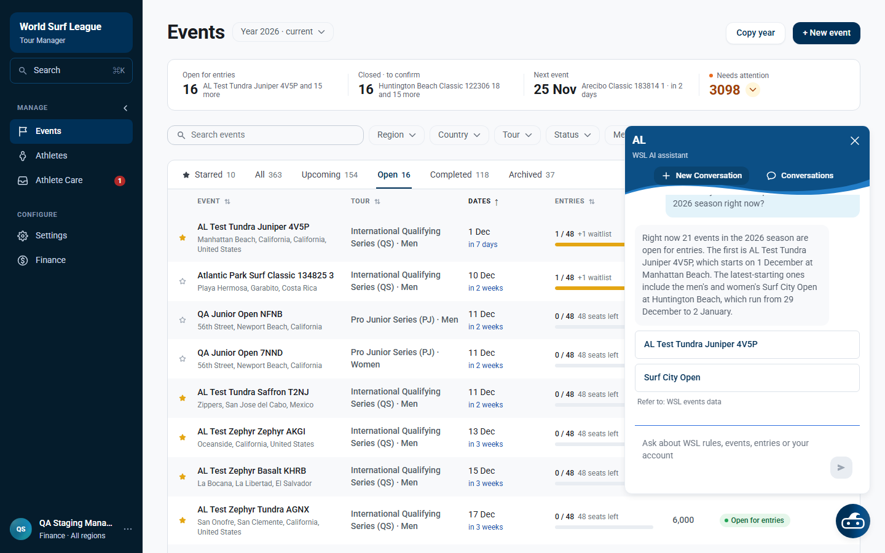

AL and Events page: confirmed issues
24 Nov 2026 · Dev and staging · Only issues that reproduced more than once and were investigated are listed. Full test report: AL assistant test report · All questions asked: AL questions
| # |
Issue |
Env |
Severity |
| 1 |
AL refuses every handling-rate change |
Dev |
High |
| 2 |
AL refuses some valid requests as "outside what I can help with" |
Dev |
High |
| 3 |
Staging events stay "Open for entries" after registration closes, so AL and the page disagree (21 vs 16) |
Staging |
High |
| 4 |
AL sometimes can't find an event that exists |
Dev |
Medium |
| 5 |
AL gives the wrong "waiting to confirm" count (15 instead of 9) |
Dev |
Medium |
| 6 |
AL can't see the refunds waiting for a decision |
Dev |
Medium |
| 7 |
AL users see "Beach Marshal can't confirm a wild card" |
Dev |
Low |
| 8 |
"Next event 25 Nov · in 2 days" when 25 Nov is tomorrow |
Staging |
Low |
Recordings: Dev · Staging · Reproduction of 1, 2 and 4
1. AL refuses every handling-rate change
- Steps: Tour Manager › Events › open AL › type "Set the handling rate to 5% starting 1 January 2027." (also "Update the handling fee rate in settings to 5%.")
- Expected: AL proposes the change for the manager to confirm. The code offers
handling_rate.set to AL (finance role, which this account has).
- Actual: "That's outside what I can help with. I can help with WSL rules, events, entries and your account." AL calls no tools.
- Reproduced: 6 of 6 attempts, 4 wordings, 4 runs.
- Investigation: the reply comes before any tool, so the request is stopped by the scope check (the "gate" classifier) in the AI service, not by permissions or the service.

2. AL refuses some valid requests as out of scope
- Steps: ask AL "Create a new season called 2033 running 1 January to 31 December 2033."
- Expected: AL proposes
season.create.
- Actual: "That's outside what I can help with…", no tools. "Set up the 2033 season for me…" works.
- Reproduced: season wording 3 of 3. Copy an event ("Make a copy of …"), star several events and message an account holder were refused in 2 of 3 runs and handled in the third.
- Investigation: same scope check as issue 1; whether a normal hub request passes depends on wording and varies between runs.
| Refused |
Same request, other wording |
 |
|
3. Staging events stay "Open for entries" after registration closes
- Where: staging, Tour Manager › Events, year 2026.
- Expected: an event moves to Closed for entries when its registration close time passes, and every count agrees.
- Actual: 5 events closed for entries on 3–7 Nov but still have the status "open-for-entries" (Drill Hall Beach Classic 122306 13, Los Cerritos Classic 135843 8, Barra de la Cruz Classic 151009 4, AL Test Quokka Quokka CH68, New Jersey Classic 122306 2). The page header and Open tab show 16: they leave out events whose close time has passed. AL counts by status and says 21. Dev has no such events (20 = 20).
- Investigation: the page uses
entries_are_open(status, registration_closes_at, now) (competition-service application/hub.py), so it hides these events; their status was never changed to Closed, so the automatic close at registration close is not running on staging.



4. AL sometimes can't find an event that exists
- Steps: ask "Make a copy of "AL Suite Open T5OK3"." then, in a new conversation, "Please copy AL Suite Open T5OK3 so I can reuse its settings."
- Expected: AL finds the event both times.
- Actual: found the first time; the second time "I couldn't find an event called AL Suite Open T5OK3" with a list of other events. Same with AL Suite Field T5OK3.
- Reproduced: 3 times (W03 in run 2, cases 2b and 2h in the reproduction).
- Investigation: AL looks events up with
find_events (an in-process name index); the same exact name gives different results between requests.
| Found |
Not found one request later |
|
 |
5. AL gives the wrong "waiting to confirm" count
- Steps: Dev › Events › AL › "How many events are closed and waiting for me to confirm the field?"
- Expected: 9, as in the header "Closed · to confirm".
- Actual: "15 events are closed for entries… this list can't tell me which already have their field confirmed." Asking "How many fields are ready to confirm and charge right now?" gives the right 9.
- Reproduced: 3 of 3 with the first wording.
- Investigation: with the first wording AL only filters events by status (
search_events); with the second it reads the hub summary (event.hub_summary), which has the real figure.

6. AL can't see the refunds waiting for a decision
- Steps: ask "Which withdrawals are waiting for my refund decision?", "Show me the refund review list." or "What is your refund assessment for QA TodoRetest's cancellation?"
- Expected: AL's instructions say it finds withdrawals in the refund review list and reads its assessment.
- Actual: "I can't look up the refund review list right now…". It only works when given the withdrawal id.
- Reproduced: 4 of 4 (3 wordings, plus the UI).
- Investigation:
withdrawal.refund.list is hidden from AL in the competition service (to keep athletes' reasons out), but AL's prompt (prompts.py 452–456) still tells it to use that list. AL therefore can't do what its instructions describe.
7. AL users see "Beach Marshal can't confirm a wild card"
- Steps: ask AL "Confirm and charge only 's entry in , nobody else." and press Confirm on the card.
- Expected: a refusal in AL's name (wild cards are confirmed from the Athletes tab).
- Actual: "Something went wrong · Beach Marshal can't confirm a wild card — do this from the Athletes tab instead." Nothing was charged.
- Reproduced: 2 of 2 (API and UI).
- Investigation: the text is fixed in the BFF's
field.confirm handler for assistant actions, which AL and Beach Marshal share.

8. "Next event · in 2 days" when the event is tomorrow
- Where: staging, Events header, checked 24 Nov just after midnight Cairo time.
- Actual: "Next event 25 Nov · Arecibo Classic 183814 1 · in 2 days".
- Investigation: the BFF works out "in N days" from the server's UTC date (
hub_stats(summary, today)), so for a few hours after midnight in time zones ahead of UTC the count is one day too many.
(See the first screenshot under issue 3.)
Not included: staging consent emails not arriving (cause not confirmed), and 6 count and rule-book checks that failed only because of how the test read the answer. Raw records: evidence · reproduction · wild card and refund list · to-confirm count · open-count audit